Здоров'я стоматолога · журнал «ДентАрт» 2025 №4
Ергономічні основи стоматологічного прийому
ERGONOMIC PRINCIPLES OF DENTAL PRACTICE
Ольга Голінка, приватна стоматологічна практика, засновниця освітнього проєкту «Центр ергономіки й асистентства» (м. Київ, Україна)Резюме. Ергономічна організація стоматологічного прийому – важливий фактор ефективності клінічної роботи і профілактики професійних захворювань лікаря й асистента. Особливе значення має робота в чотири руки, що забезпечує зменшення фізичного навантаження, економію часу і поліпшення якості лікування. Одним із ключових аспектів ергономіки є зонування робочого простору, що передбачає чіткий поділ на зону лікаря, зону асистента, зону передачі інструментів і статичну зону. Такий поділ дозволяє оптимізувати рухи, скоротити кількість непотрібних переміщень і забезпечити безперервність робочого процесу.
Мета статті – узагальнити основи ергономічного стоматологічного прийому, визначити принципи зонування робочого простору і роль асистента в забезпеченні ефективної командної взаємодії.
Ключові слова: ергономіка, стоматологічний прийом, робота в чотири руки, асистент стоматолога, зонування робочого простору, годинникова схема, функціональні зони, командна взаємодія.
Вступ
Ергономіка в стоматології – це наука про раціональну організацію робочого процесу, яка забезпечує ефективність лікування, зменшує фізичне навантаження на медичний персонал і підвищує комфорт пацієнта. Для асистента стоматолога знання і застосування ергономічних принципів є необхідною умовою якісної роботи і тривалої професійної активності без перевтоми і професійних захворювань.
Основні завдання ергономіки:
- підвищення продуктивності і якості роботи;
- зменшення фізичного і психоемоційного навантаження на лікаря й асистента;
- забезпечення зручності, безпеки і комфортних умов праці;
- збереження здоров'я і профілактика професійних захворювань опорно-рухового апарату.
Фактори успішної ергономіки
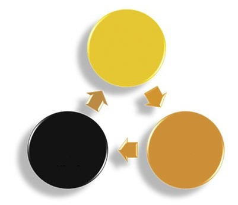
Ефективна ергономіка ґрунтується на трьох взаємопов'язаних складових (рис. 1):
- Лікар, який володіє знаннями ергономічних принципів і прагне працювати раціонально.
- Асистент, який уміє працювати ергономічно, підтримує чітку координацію дій і передбачає потреби лікаря на крок уперед.
- Обладнання і меблі, що дозволяють реалізувати ергономічні принципи: анатомічні крісла, ергономічні стільці, якісне освітлення, портативне обладнання, сучасні інструменти і системи аспірації.
Основні принципи ергономіки під час прийому
- Раціональне розміщення робочого місця. Усі інструменти, матеріали й обладнання мають бути розташовані в зоні легкого доступу лікаря й асистента без необхідності зайвих рухів або поворотів корпусу.
- Оптимальне положення тіла лікаря й асистента. Робочі пози мають забезпечувати пряму поставу, підтримку природних вигинів хребта і мінімізацію статичного навантаження на м'язи шиї, спини і плечового пояса.
- Розподіл зон роботи. Простір стоматологічного кабінету ділиться на зони діяльності лікаря, асистента і пацієнта, що дозволяє уникати перехрещення рухів і підвищує ефективність маніпуляцій.
- Чітка взаємодія команди. Скоординовані дії лікаря й асистента, робота в чотири руки скорочують час лікування, зменшують утому і підвищують якість наданої допомоги.
- Оптимальне освітлення робочого поля. Джерела світла мають бути розташовані під правильним кутом і на відповідній висоті, щоб уникнути тіней і знизити зорове навантаження.
- Правильна висота і положення стоматологічного крісла. Положення пацієнта має забезпечувати зручний доступ до операційного поля без нахилів або надмірних зусиль.
Роль асистента в дотриманні ергономіки
Асистент стоматолога відіграє ключову роль у створенні ергономічного робочого середовища. Він відповідає за правильну підготовку робочого місця, організацію інструментів і матеріалів, передачу їх лікарю зручним способом і підтримання порядку під час прийому. Також асистент допомагає контролювати положення пацієнта, стежить за комфортом лікаря і запобігає зайвим рухам, які можуть призвести до перевтоми або травм.
Дотримання ергономічних принципів на стоматологічному прийомі підвищує ефективність роботи, знижує ризик професійних захворювань і забезпечує комфорт і безпеку як для пацієнта, так і для всієї медичної команди.
Ергономічна співпраця лікаря й асистента
Ергономічна організація стоматологічного прийому неможлива без гармонійної співпраці лікаря й асистента. Вони утворюють єдину злагоджену команду, в якій кожен виконує свою роль, а результат лікування залежить не тільки від професійних знань і технічних навичок, але й від рівня взаєморозуміння, довіри і поваги між членами команди.
Справжня ергономічна взаємодія починається із взаємного прийняття – коли лікар і асистент визнають цінність роботи одне одного, розуміють значущість власного внеску і вчаться діяти як єдине ціле. Не менш важливі толерантність і психологічна гнучкість: уміння бачити і поважати індивідуальні особливості партнера, враховувати його стиль роботи, реагувати на темп і логіку його дій. У стоматології, де кожна секунда має значення, уміння підлаштовуватися одне до одного стає запорукою ефективності.
Спільне прагнення до розвитку є ще однією основою міцної професійної співпраці. Коли обидва члени команди постійно вдосконалюють свої навички, опановують нові методики, цікавляться сучасними підходами і технологіями, вони не тільки підвищують рівень власної роботи, але й створюють умови для спільного зростання. Таке партнерство виходить за межі простого розподілу обов'язків і перетворюється на взаємодію, де кожен мотивує іншого рухатися вперед.
Важлива складова командної роботи – здатність планувати і координувати свої дії. Асистент має вміти передбачити наступний крок лікаря, підготувати інструмент ще до того, як він буде затребуваний, а лікар – чітко формулювати свої потреби і дії. Така синхронізація перетворює роботу в чотири руки на справжній ритмічний процес, де кожен рух має значення, а робочий час використовується максимально ефективно.
Не менш важлива професійна відповідальність. Кожен член команди має розуміти, що якість лікування, безпека пацієнта і комфорт усього процесу залежать від нього особисто. Успішна взаємодія неможлива без глибокого знання правил роботи в чотири руки, володіння техніками передачі інструментів, аспірації, ретракції та ізоляції, а також уміння діяти точно і впевнено навіть у складних клінічних ситуаціях.
Отже, ергономічна співпраця лікаря й асистента – це не просто технічна взаємодія двох спеціалістів, а професійне партнерство, засноване на взаємній повазі, довірі, бажанні вчитися і розвиватися разом. Саме така взаємодія створює робочий простір, де кожна дія продумана, кожен рух має сенс, а пацієнт отримує не тільки якісну медичну допомогу, але й упевненість у тому, що він у надійних руках.
Годинникова схема зон роботи лікаря й асистента
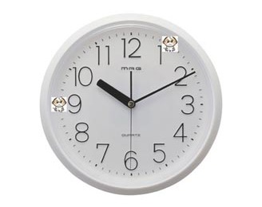
Одним із ключових принципів ергономічної організації стоматологічного прийому є чітке розмежування робочого простору між лікарем і асистентом. Найнаочніше цей принцип відображає так звана годинникова схема, що умовно ділить робочу зону навколо пацієнта на сектори за аналогією з циферблатом годинника. Пацієнт при цьому розташований у центрі в положенні лежачи, а його голова відповідає центру циферблата.
Ця схема дозволяє оптимально розподілити обов'язки між членами команди, уникнути перетину рухів, забезпечити чітку координацію дій і мінімізувати зайві мікрорухи. Лікар і асистент працюють у своїх визначених зонах, що дозволяє їм зосередитися на своїх завданнях, не заважаючи одне одному (рис. 2).
При роботі в шість рук до цієї схеми додається ще одна позиція – місце другого асистента, який зазвичай розташовується позаду або збоку від лікаря, залежно від організації простору і завдань. Це дозволяє оптимізувати роботу з технічним обладнанням, матеріалами і документацією, не створюючи перешкод для основного процесу лікування. Використання годинникової схеми значно підвищує ефективність командної роботи, зменшує фізичне навантаження на лікаря й асистента, скорочує час маніпуляцій і знижує ризик травм опорно-рухового апарату. Крім того, воно сприяє формуванню чітких алгоритмів рухів і дій, які є невід'ємною частиною ергономічного підходу в сучасній стоматології. Годинникова схема зон роботи – це не просто умовна модель простору, а фундаментальний інструмент організації стоматологічного прийому, що забезпечує комфорт, точність і безперервність роботи всієї команди.
Зонування робочого простору лікаря-стоматолога й асистента
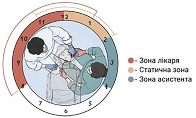
Раціональне зонування робочого простору – ключовий принцип ергономіки стоматологічного кабінету. Правильний розподіл зон дозволяє мінімізувати зайві рухи, скоротити час пошуку інструментів і матеріалів, забезпечити безперервність робочого процесу і підвищити комфорт і лікаря, й асистента.
Уся робота лікаря-стоматолога й асистента зосереджена навколо пацієнта. Для забезпечення гармонії, злагодженості і повного взаєморозуміння при виконанні маніпуляцій важливо чітко дотримуватися принципів ергономічного зонування робочого простору. Зорово ці зони визначають, орієнтуючись на циферблат годинника, де обличчя пацієнта умовно розташоване в центрі, а ніс спрямований на 12 годин.
Такий підхід дозволяє стандартизувати положення лікаря й асистента відносно пацієнта, оптимізувати рухи, знизити втому і забезпечити високу ефективність роботи.
Зони активності лікаря-стоматолога під час роботи – зона лікаря, статична зона і зона асистента – можуть трохи змінюватися залежно від положення кожного члена команди відносно пацієнта. Так, якщо лікар розташовується умовно на «дев'ять годин», а асистент – на «три години», то статична зона – в межах від «одинадцятої» до «першої години». Відповідно, коли лікар працює з позиції «дванадцятої години», статична зона зміщується в діапазон від «першої години» і далі – залежно від обраної робочої позиції.
Простір навколо пацієнта умовно ділять на чотири зони активності (рис. 3):
- Зона лікаря (оператора) – простір, у якому лікар виконує більшість маніпуляцій. Вона має бути в межах легкого досягнення рук без зайвого нахилу або повороту тулуба. Лікар найчастіше займає позицію між 8 і 1 годинами. Найпоширенішою вважається робоча позиція «9 годин» (справа від пацієнта) – вона забезпечує оптимальний огляд і зручний доступ до більшості зубних поверхонь. Для окремих маніпуляцій лікар може переміщатися в позицію «11–12 годин» (за головою пацієнта), особливо під час роботи у фронтальній ділянці або на верхній щелепі.
- Зона асистента розташовується ззаду або збоку від пацієнта (зазвичай у секторі між 1 і 4 годинами за уявним циферблатом), що дозволяє швидко подавати інструменти, здійснювати аспірацію, ретракцію і підготовку робочого поля. Його зона має забезпечувати зручний доступ до порожнини рота без перетину траєкторій руху лікаря.
- Зона передачі інструментів зазвичай розміщується в секторі 4–8 годин, тобто в ділянці грудної клітки пацієнта. Тут відбувається найзручніша і найшвидша передача інструментів з мінімальними рухами.
- Статична зона (зона статичного розміщення обладнання) – допоміжна зона, це сектор 12–2 години, де доцільно розміщувати пристрої, якими користуються обидва члени команди (наприклад, стоматологічну тумбу або модулі з інструментами), він має бути доступний без перешкод без зміни робочої пози лікаря або асистента.
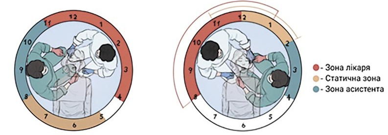
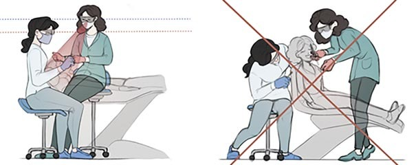
Грамотно організоване зонування дозволяє створити логічну й ефективну структуру робочого місця, що сприяє підвищенню якості лікування і профілактиці професійних захворювань опорно-рухового апарату.
Зона лікаря (оператора)
- Для праворукого лікаря ця зона розташована між 8 і 1 годинами.
- Для лікаря-шульги – між 11 і 4 годинами.
Характеристика:
- У цій зоні лікар виконує основні маніпуляції: препарування, полімеризацію, моделювання реставрацій тощо.
- Робочий стілець має бути встановлений так, щоб лікар міг підтримувати пряму поставу, зберігати зорову вісь під кутом приблизно 10–15° до площини роботи, не напружуючи спину і шию.
- Руки мають розташовуватися на рівні серця або трохи нижче.
Зона асистента
- Для праворукого лікаря зона асистента розташована між 1 і 4 годинами.
- Для лікаря-шульги – між 8 і 11 годинами.
Характеристика:
- У цій зоні асистент забезпечує лікаря всіма необхідними інструментами і матеріалами, контролює відсмоктувач, подає світло, підтримує чистоту робочого поля.
- Асистент має сидіти вище лікаря приблизно на 10–15 см, щоб мати хороший огляд і зручний доступ до порожнини рота пацієнта. Обидва члени команди зберігають нейтральну робочу позу і рівну спину – це запорука ефективності і профілактики перевтоми (рис. 4.1 і 4.2).
- Усі маніпуляції асистента мають бути плавними, безперервними і виконуватися в зоні передачі, щоб не перетинати робочу траєкторію лікаря.
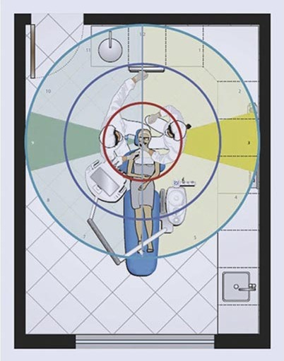
Зона передачі інструментів
- Для праворукого лікаря – умовно між 4 і 7 годинами.
- Для лікаря-шульги – між 5 і 8 годинами.
Важливо дотримуватися ритму роботи: передача інструментів має бути своєчасною, тихою і узгодженою з етапами маніпуляції.
Статична зона
- Для праворукого лікаря – між 12 і 2 годинами.
- Для лікаря-шульги – між 10 і 12 годинами.
Характеристика:
- У цій зоні розміщують обладнання, яке має бути в полі досяжності, наприклад ємності з матеріалами, фотополімерну лампу, контейнери для інструментів.
- Із цієї зони асистент може взяти або прибрати матеріал, не заважаючи роботі лікаря.
- Використання статичної зони підвищує ефективність організації робочого місця і сприяє збереженню ергономічної позиції.
Принципи ефективної роботи в чотири руки
- Усі предмети мають бути в межах досяжності лікаря й асистента, без необхідності повертати тулуб.
- Передача інструментів відбувається в полі зору лікаря, але без відриву погляду від робочого поля.
- Кожен інструмент має своє фіксоване місце на робочому столику.
- Рухи лікаря й асистента мають бути мінімальними, скоординованими і ритмічними.
- Правильне зонування сприяє скороченню тривалості прийому, зниженню втоми і поліпшенню якості лікування.
Зона досяжності асистента й організація робочого простору
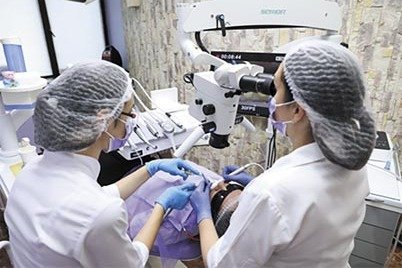
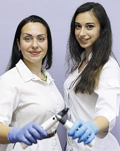
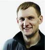
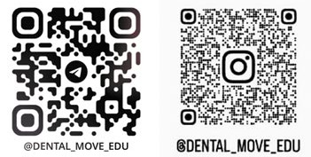
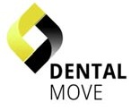
Рис. 5. Зона досяжності асистента й організація робочого простору. Рис. 6. Операційний мікроскоп посилює синергію в роботі команди. Рис. 7. Розуміння принципів ергономіки і дотримання протоколів лікування забезпечують злагодженість роботи команди.
Асистент має мати вільний доступ до всіх елементів робочої зони, необхідних для ефективної підтримки лікаря:
- інструменти і матеріали першочергового застосування (на робочому столику асистента або модулі);
- операційна система відсмоктування і слиновідсмоктувачі – постійно під контролем;
- джерело освітлення – асистент може змінювати напрямок та інтенсивність світла, не порушуючи стерильності і положення лікаря;
- система регулювання стоматологічного крісла – асистент має можливість налаштувати положення пацієнта (спинка, висота, кут нахилу) відповідно до клінічного етапу;
- пристосування для видалення відпрацьованих матеріалів і відходів, розташовані в зоні безпечного доступу (рис. 5).
Функціональні завдання асистента під час роботи:
- Забезпечує постійне очищення робочого поля (відсмоктування, осушення, видалення залишків матеріалів).
- Передає інструменти лікарю в робочому положенні, дотримуючись правил безпеки.
- Готує наступні інструменти і матеріали заздалегідь, забезпечуючи безперервність процесу.
- Стежить за положенням пацієнта і коригує його за необхідності.
- Керує освітленням, забезпечуючи оптимальну візуалізацію операційного поля.
- Контролює стерильність робочого простору і своєчасно замінює використані інструменти.
Ергономічна взаємодія лікаря й асистента
Комунікація може бути невербальною (жести, сигнали) – це збільшує швидкість і плавність роботи.
- Рухи асистента узгоджені з ритмом дій лікаря.
- Усі маніпуляції виконуються в зоні передачі, без перетину робочої траєкторії лікаря.
- Погляд асистента завжди спрямований у зону роботи лікаря, що забезпечує швидку реакцію на його дії. Використання операційного мікроскопа з виведенням зображення на екран посилює комунікацію і розуміння етапів роботи (рис. 6).
Висновок
Ергономічна організація робочого простору лікаря-стоматолога й асистента – ключова умова ефективної, безпечної і комфортної роботи всієї команди.
Раціональне зонування робочого простору мінімізує непотрібні рухи, скорочує час виконання процедур і створює передумови для стабільного темпу роботи. Для асистента це забезпечує структуроване навчання, швидшу адаптацію в клінічному середовищі і чітке розуміння власної ролі. Для лікаря – оптимальне положення тіла, зниження фізичного навантаження і підвищення продуктивності. У результаті впровадження ергономічних принципів підвищує якість стоматологічної допомоги, поліпшує командну взаємодію і сприяє формуванню сучасної культури праці в стоматології.
Читайте також: Ергономіка у стоматології: наука, що подовжує професійну діяльність — «ДентАрт» 2025 №2.